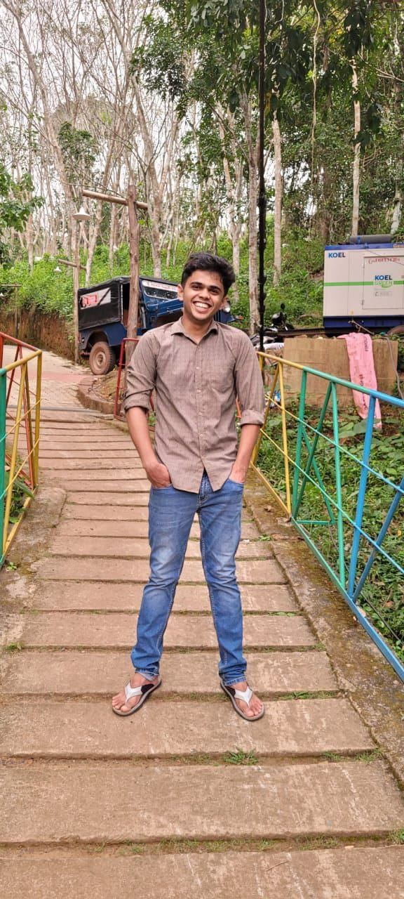

Jithesh Pavan DSouza
I'm Jithesh, a physics graduate from IISER Thiruvananthapuram working on AI safety and evaluation.
Experience & education
- July 2025–
July 2026 - AI Safety Research Assistant · AIPlans
Model Diffing
I independently built and ran post-training and evaluation workflows to study changes in language-model behavior, from dataset preparation to published checkpoints.
More detailsLess details about Model Diffing
Across the project, I applied GRPO, PPO, DPO, and KTO and fine-tuned Qwen models at 0.6B and 8B scales.
I evaluated DPO-trained Qwen3-0.6B against its starting model on ARC, HellaSwag, TruthfulQA, and WinoGrande, and published model checkpoints, training details, and evaluation results on Hugging Face.
- Mar–June
2025 - Computer vision intern · Dobbe.ai
Built dental detection and segmentation pipelines used in production, and a fast interim cavity-segmentation method using k-means clustering. - June–July
2024 - ML intern · ExpoSys Datalabs
Developed machine-learning models for regression tasks. - 2019–24
- BS–MS in Physics · IISER Thiruvananthapuram
Minor in Data Science. First prize in Codebattle 2023 at Anvesha.
Selected research & projects
-
Ongoing research · Sept 2026–present
FutureProbes: looking ahead at model behavior
Can internal activations predict misaligned behavior before it appears in a model's outputs? I'm investigating this with lookahead linear probes, advised by Dr. Shivam Raval.
More detailsLess details about FutureProbes
I've implemented and tested a preliminary activation-extraction and probing framework, with experiments targeting reward hacking, sandbagging, manipulation, and deception.
-
BS–MS thesis · IISER Thiruvananthapuram · 2023–24
Neural-network quantum states for fermionic systems
With Dr. Amal Medhi, I modeled strongly correlated fermions using neural-network quantum states and variational Monte Carlo.
More detailsLess details about neural-network quantum states
I simulated a 10 × 10 Hubbard lattice, observed a metal–insulator transition, and used singular value decomposition to address instability in the optimization.
More experiments
Writing
-
Research manuscript · Draft / work in preparation
Evaluating Quantum Machine Learning Algorithms for Large Language Models in Healthcare Data
Research with Prof. Ahmed Farooq exploring Quantum Machine Learning methods for sentiment and disease classification. Not yet published.
-
Notes from building
Decoding Transformers: How Attention Makes Them Work
-
Notes from experimenting
Neural Networks Don't See Inputs or Parameters, Only Numbers